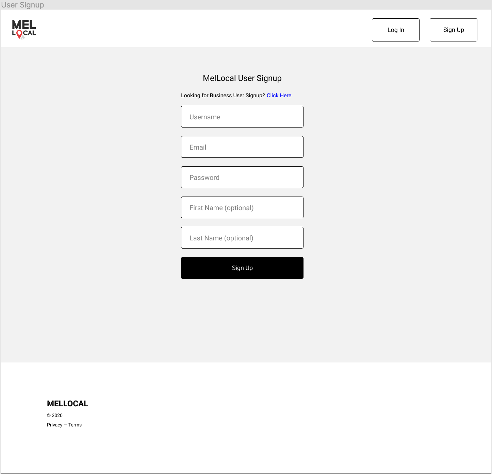
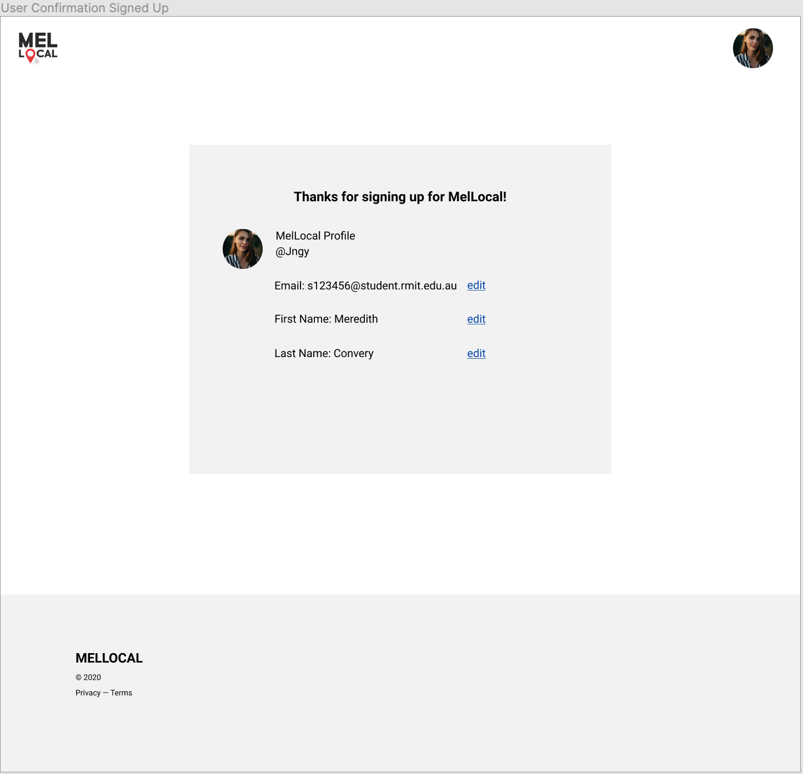
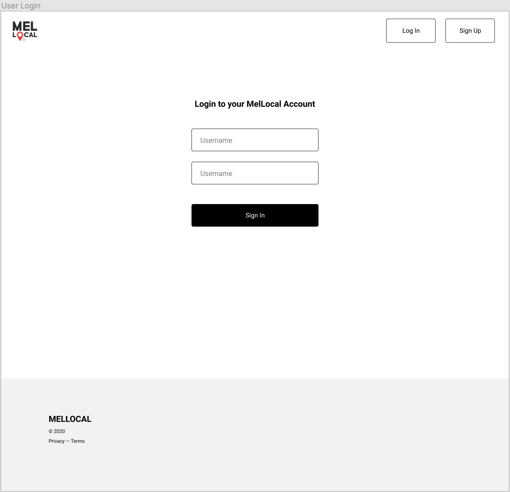
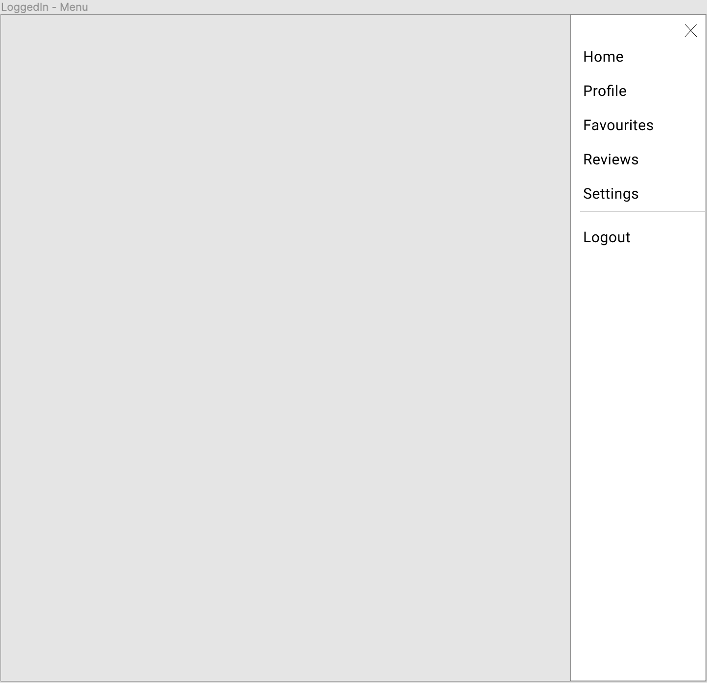
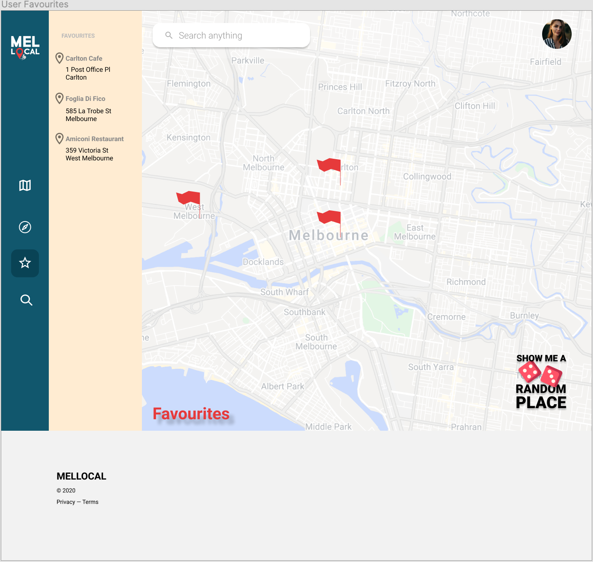

The website allows users to register for a personal account so they can access the system's advanced features like creating ads, businesses, review business and more. To be able to create an account, users need to provide the information requested by the website such as name, email, password, etc.
1. Provide Information for Registering
 
Consistency and Standards:
Input layout and button are clearly display with different colour and structure. It similar with the
overall website
Flexibility and Efficency of Use:
"Sign up" button display on the header of all pages. User can register account whenever they
want.
User Control and Freedom:
When user is on register layout, they still can exit to that function by click on the logo of the
website
Visibility of System Status
The system will show the information table of the user after they submitting the register form to
announce they successfully registered.
2. Login to Open Business Function
 
Consistency and Standards:
Input layout and button are clearly display with different colour and structure. It similar with the
overall website
Flexibility and Efficency of Use:
Advanced menu button display on the header of all pages when user signed in. User can open it whenever they
want.
User Control and Freedom:
Advanced menu contain close button, customer can choose to close this menu
Visibility of System Satus
When the user moves the cursor on a feature of the advanced menu, the background color of this feature will be changed. This helps users to recognize where their pointer is
3. Display Favourite Places

Consistency and Standards:
All locations that the user has added to favourites will display the address in the left column, also the system will mark their location with a red flag which is placed on the map.
Flexibility and Efficency of Use:
The user freely delete or add their favourite places without any limitation
Visibility of System Satus
When a new places is added, this place's address will appear in the top of favourite address list. So that user can make sure their favourite address was added